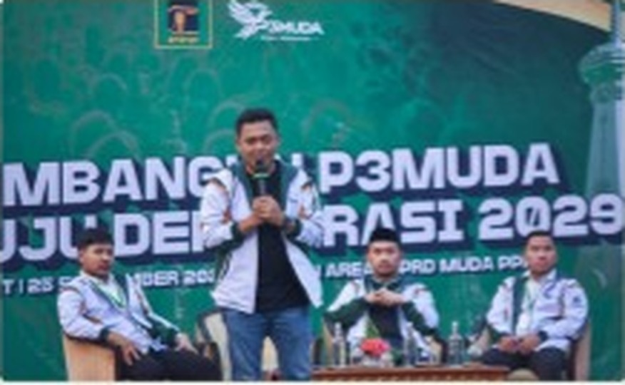
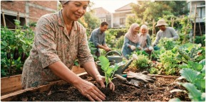
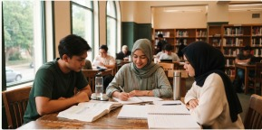

Informasi terbukaDialog setaraKepedulian bersama
MENGENAL PPP
Berakar pada identitas.
Terbuka pada kebutuhan.
Partai Persatuan Pembangunan (PPP) menjadi subjek kajian komunikasi publik dalam rancangan ini. Identitas Islam dan akar sejarahnya tetap menjadi konteks, dengan narasi yang diperluas ke pendidikan, kesejahteraan sosial, lingkungan, dan ekonomi masyarakat.
Tentang PPPINFORMASI PILIHAN UNTUK PUBLIK
Apa yang ingin Anda temukan?
PROGRAM & AKSI
Dari kepedulian, menjadi gagasan.
Dua usulan akademik untuk membayangkan manfaat yang dekat dengan kehidupan sehari-hari. Bukan program yang sedang berjalan.

LINGKUNGAN · SOSIAL DAN KEMANUSIAAN
Rancangan Program — Mock-up Akademik
PPP Peduli Bumi dan Kemanusiaan
Merawat lingkungan dan memperkuat kepedulian sosial melalui pembelajaran warga, kebun komunitas, dan kesiapsiagaan bersama.
Lihat rancangan program
PENDIDIKAN
Rancangan Program — Mock-up Akademik
Beasiswa Pendidikan Pemuda
Usulan dukungan belajar yang memadukan bantuan pendidikan, pendampingan, dan akses informasi bagi pemuda.
Lihat rancangan programASPIRASI RAKYAT
Suara Anda layak mendapat ruang.
Lihat bagaimana sebuah gagasan dapat dicatat, dipahami, dan ditindaklanjuti dalam contoh alur aspirasi yang transparan.
Buka Aspirasi Rakyat
Hanya simulasi akademik. Tidak ada pesan yang dikirim kepada PPP.
PERNYATAAN RESMI
Jelas sumbernya. Utuh konteksnya.
Pratinjau arsip contoh; bukan pernyataan resmi dari PPP.
Arsip Pernyataan Resmi